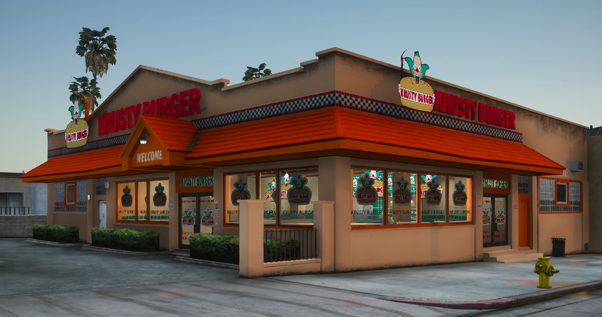

Mapping & modélisation
Je crée et aménage les lieux pour donner une identité au serveur. Les visuels montrent notamment une étude de parc en 3D, un restaurant à thème et un repère Springfield dans le paysage.
Trois réalisations web. Deux projets en cours. Découvrez les interfaces, les usages et les idées qui font avancer mon parcours.
Un espace central pour travailler, retrouver les documents, suivre l’agenda et organiser une revue de presse. Démonstration adaptée des modules de mon projet original, avec une identité neutre et uniquement des données fictives.
PHP · Documents · AgendaL’habillage et les composants visuels du projet original sont conservés. Les traitements PHP et la base de données sont remplacés par des interactions locales : recherche, publication fictive, agenda et gestion des profils. Identité, contacts et documents sont fictifs.
Explorer en plein écran ↗Mon projet de station interne pour Weazel News : un outil de planning éditorial, de réservation de panneaux publicitaires, d’archivage des annonces et de génération de factures dans un univers roleplay.
Weazel News · Outil interneInterface originale : planning éditorial, création et déplacement d’annonces, réservation de panneaux, archives et préparation de factures. Les API sont remplacées par un adaptateur local avec données fictives.
Explorer en plein écran ↗Le site internet de Weazel News, distinct de sa station interne : la vitrine du média dans son univers roleplay, avec un catalogue de prestations, des pages dédiées et un parcours de recrutement.
Weazel News · Site webVéritable site : accueil animé, catalogue, formats publicitaires et pages de présentation. Les connexions Discord, inscriptions et services externes sont désactivés dans cet aperçu.
Explorer en plein écran ↗Je développe une IA qui scrute l’actualité, génère des textes d’information et les publie sur les réseaux sociaux. Le projet est en cours : la veille d’actualité fait partie de l’objectif, tandis que la base existante comprend la génération, les variantes par réseau, la validation et la programmation.
Next.js · IA · Réseaux sociauxScénario local préécrit : aucune IA ni publication réelle n’est appelée dans cette démonstration.
Choisissez un sujet pour explorer le parcours éditorial.
En attenteLa base du projet prévoit une validation humaine activée par défaut, un calendrier et des adaptateurs de publication par API officielle. La veille et le flux complet restent en développement.
Créer un serveur roleplay FiveM inspiré de l’univers des Simpsons : des lieux reconnaissables, une identité visuelle et des interactions pensées pour le jeu. Je travaille moi-même sur le mapping et le développement des scripts.
FiveM · Mapping · Scripts · Univers RP
Du premier volume 3D aux détails d’un décor, construire un univers dans lequel les joueurs pourront écrire leurs histoires.
Je crée et aménage les lieux pour donner une identité au serveur. Les visuels montrent notamment une étude de parc en 3D, un restaurant à thème et un repère Springfield dans le paysage.
Je développe les scripts pour construire les interactions et les mécaniques RP. Le HUD présenté illustre le travail sur l’interface : position des éléments, lisibilité des informations et personnalisation de l’affichage.
Le serveur est en cours de création. Ces captures documentent différentes étapes de travail, de la conception 3D aux aperçus en jeu ; elles ne représentent pas une version finale.
Sélectionnez une image pour l’agrandir.
Krusty Burger : aperçu de la façade et de son identité visuelle dans l’environnement de jeu.
Vue de modélisation 3D d’un parc : allées, espaces verts, mobilier et place centrale.
Aperçu du HUD en cours de travail : déplacement des éléments, taille, opacité et indicateurs du joueur.
Intérieur du restaurant : mobilier, emballages et accessoires participent à l’ambiance du lieu.
Aperçu en jeu de M. Burns devant un environnement industriel, dans l’univers du serveur.
Vue nocturne de l’enseigne Springfield intégrée au paysage : un repère visuel pour l’univers RP.
Visuels du projet en cours : étude 3D, décors, personnage et interface en jeu. Le contenu évolue au fil du développement.